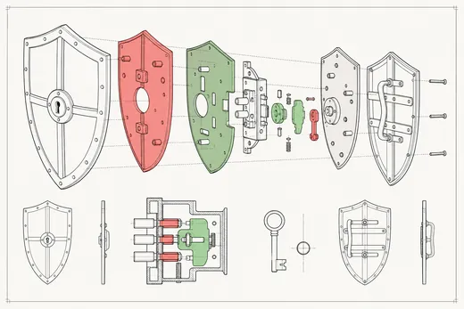

A 12-point audit for small sites and applications. Not penetration testing — the fundamentals that account for most real incidents at this size, ranked by severity so you can triage honestly.

FIG. 03 — exploded security layer diagram
Tick what you already have. The score is weighted by severity — this is the same sheet we work from on a paid audit.
Tick the controls you have in place.
| Stage | Duration | Output |
|---|---|---|
| Recon | 1 day | Surface map, tech fingerprint |
| Automated scan | 1 day | Headers, deps, TLS, DNS |
| Manual review | 2 days | Auth flows, uploads, admin routes |
| Report | 1 day | Ranked findings + fix estimates |
Five working days total. Fixes are quoted separately so you can do them yourself if you prefer.
We are deliberately narrow. These need a specialist and we will refer you rather than pretend: